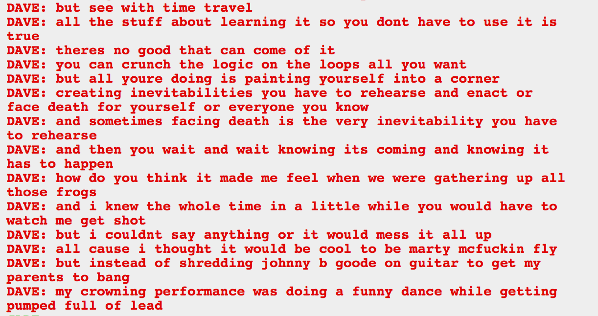

That makes a lot of sense. He’s a hero of time it’s probably not so bad that he time travels and stuff, but it’s got to be hard on the psyche, jumping around through time.
Seems like our heroes have had a lot of apathy after their three year travels. They really should have gotten a hypergravity chamber. I don’t recall the DBZ guys being all apathetic about their enemies.